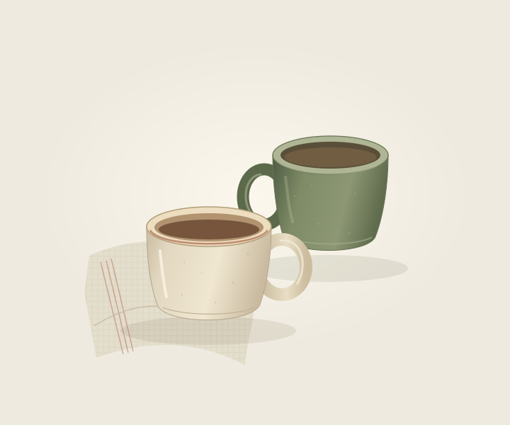

Set out two.
A second cup can be a small invitation to stop and stay.

First collection · In development
Italian for “pause”
Two cups. A little time. Pausa explores the everyday pleasure of sitting down with someone, or simply making space for yourself.
We are still developing this piece. Finished specifications, availability and pricing will follow when the product is ready.
Ask about the collectionThe ritual
Stopping for a drink and a conversation.
Between the work and the things that need doing, there can be a cup, a seat and a moment to listen. It need not be a long pause to feel like a worthwhile one.
About this design study
This design study explores a pair of simple ceramic cups, with quiet colour and comfortable, familiar forms. Their capacity, materials and final details are still being developed.
An everyday invitation
A second cup can be a small invitation to stop and stay.
A drink can be a reason to sit for a conversation, or a little quiet.
The most meaningful rituals often become part of an ordinary day.
Another ritual to return to
The pleasure of making with your hands.
Explore Fatto ← Back to the first collection
A little closer to where we come from.